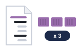
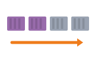
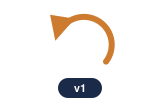
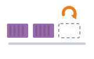
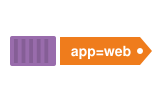
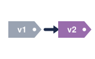
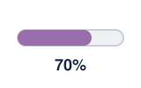
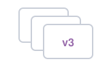

01What we want · អ្វីដែលយើងចង់បានreplicas
A deployment describes how many copies of our app we want.
Deployment ពិពណ៌នាថា យើងចង់បានច្បាប់ចម្លងកម្មវិធីប៉ុន្មាន។
Deployment និង rollout · ចេញកំណែថ្មី ដោយអ្នកប្រើមិនដឹងខ្លួន
Deployment រក្សាចំនួន pod ឲ្យត្រឹមត្រូវ ហើយប្តូរកំណែចាស់ទៅថ្មីបន្តិចម្តងៗ ដោយមិនបិទសេវា។

Desired countចំនួនដែលចង់បាន
Rolling updateប្តូរបន្តិចម្តងៗ
Roll backត្រឡប់ទៅកំណែមុនតាមលំដាប់៖ ប្រាប់ចំនួន → ចេញកំណែថ្មី → តាមដាន → rollback បើមានបញ្ហា។
Space listen · ← → move · K show text
A deployment describes how many copies of our app we want.
Deployment ពិពណ៌នាថា យើងចង់បានច្បាប់ចម្លងកម្មវិធីប៉ុន្មាន។

Behind it, a ReplicaSet keeps that number of pods alive.
នៅពីក្រោយវា ReplicaSet រក្សាចំនួន pod នោះឲ្យនៅរស់។

Labels are name tags that connect pods to their deployment.
Label គឺជាស្លាកឈ្មោះ ដែលភ្ជាប់ pod ទៅ deployment របស់វា។

To release a new version, we change the image tag.
ដើម្បីចេញកំណែថ្មី យើងប្តូរ image tag។
A rolling update replaces old pods a few at a time.
Rolling update ជំនួស pod ចាស់ម្តងបន្តិចៗ។
Users see no downtime during the update.
អ្នកប្រើមិនឃើញការដាច់សេវាទេ ក្នុងពេល update។

We watch the rollout until it finishes.
យើងតាមដាន rollout រហូតដល់វាចប់។
If something goes wrong, we roll back with one command.
បើមានបញ្ហា យើង rollback ដោយប្រើពាក្យបញ្ជាតែមួយ។

Kubernetes keeps the old versions in its rollout history.
Kubernetes រក្សាទុកកំណែចាស់ៗ ក្នុង rollout history។
No. The deployment sees one is missing and creates a new one.
ទេ។ Deployment ឃើញថាខ្វះមួយ ហើយបង្កើតមួយថ្មី។
ដើម្បីបិទវាពិតប្រាកដ ត្រូវ scale deployment ទៅ 0 ឬលុប deployment។
No. Blue-green runs two full versions and switches all traffic at once.
ទេ។ Blue-green ដំណើរការកំណែពេញលេញពីរ ហើយប្តូរចរាចរណ៍ទាំងអស់ក្នុងពេលតែមួយ។
Rolling update ប្តូរម្តងបន្តិចៗ។ Blue-green ប្តូរម្តងទាំងអស់។
Run kubectl rollout status on the deployment.
រត់ kubectl rollout status លើ deployment នោះ។
We run three, so one can fail safely.확인 필요 · checkcheck
យើងដំណើរការបី ដើម្បីឲ្យមួយអាចខូចដោយគ្មានបញ្ហា។
Yes. We can pause it, check, then resume.
បាន។ យើងអាចផ្អាកវា ពិនិត្យ រួចបន្តវិញ។
Tap a word's play button to hear it. Hide one side, then recall it before you tap to check.
Q. If I delete a pod, is it gone for good?
Q. បើខ្ញុំលុប pod មួយ តើវាបាត់ជារៀងរហូតទេ?
A. No. The deployment sees one is missing and creates a new one.
A. ទេ។ Deployment ឃើញថាខ្វះមួយ ហើយបង្កើតមួយថ្មី។
Q. Is a rolling update the same as blue-green?
Q. Rolling update ដូចនឹង blue-green ទេ?
A. No. Blue-green runs two full versions and switches all traffic at once.
A. ទេ។ Blue-green ដំណើរការកំណែពេញលេញពីរ ហើយប្តូរចរាចរណ៍ទាំងអស់ក្នុងពេលតែមួយ។
Q. How do I check the rollout?
Q. តើខ្ញុំពិនិត្យ rollout យ៉ាងដូចម្តេច?
A. Run kubectl rollout status on the deployment.
A. រត់ kubectl rollout status លើ deployment នោះ។
Q. How many replicas do we run in production?
Q. យើងដំណើរការ replica ប៉ុន្មាននៅ production?
A. We run three, so one can fail safely.
A. យើងដំណើរការបី ដើម្បីឲ្យមួយអាចខូចដោយគ្មានបញ្ហា។
Q. Can we pause a rollout?
Q. យើងអាចផ្អាក rollout បានទេ?
A. Yes. We can pause it, check, then resume.
A. បាន។ យើងអាចផ្អាកវា ពិនិត្យ រួចបន្តវិញ។
Is it safe to deploy now?
ឥឡូវ deploy មានសុវត្ថិភាពទេ?
Let's wait until the rollout is done.
តោះរង់ចាំរហូតដល់ rollout ចប់សិន។
Say it in your head first, then tap the box to check.